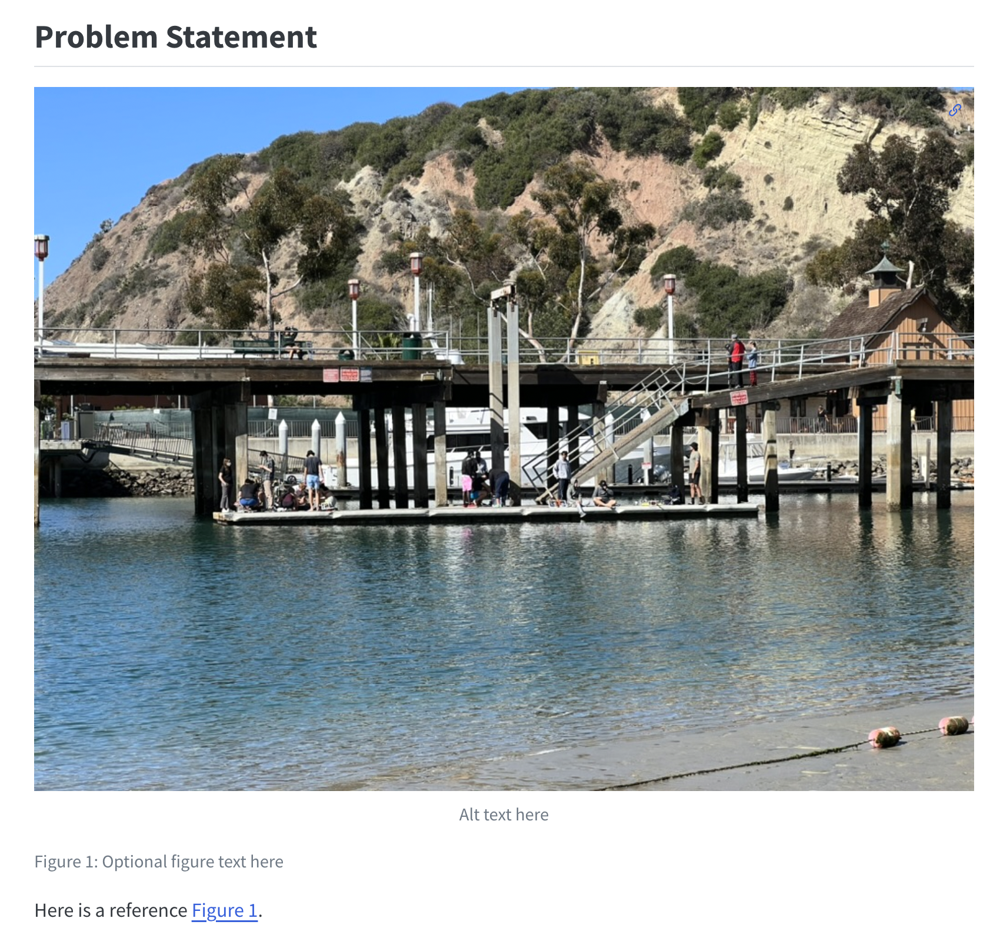

And how to make one
2024-11-11
A mathematical illustration of luck surface area.
Modified from “Let It Rip”.
A portfolio has many benefits:
At minimum, your portfolio website should have:
You could also consider including some other things:
There are many different options you could use to create your portfolio website.
_quarto.yml<github_username>.github.io.Terminal > New Terminal).quarto create../ will create the project in your current directory.Once you create your Quarto project you can preview it immediately to see what it looks like.
By default, this will render the entire site and then open a browser to preview it. If you want to preview a specific file, you can include it after the command. (e.g. quarto preview <filename>.qmd)
Next, we’ll customize the site.
_quarto.ymlYou can organize your files however you would like, but choosing a regular file structure will be very helpful. I recommend the following general structure.
.gitignore file: Includes the files to leave untracked in version control.blog.qmd: will load blog post from posts/ folder_site/: auto-generated by Quarto, you don’t need to create this folder. You should add it to your .gitignore.projects/: folder to organize projects.projects/index.qmd: page to display and list projects.images/: folder(s) to store images for your site and pages. Best to keep organized in the relevant folder (e.g., per project).Sample project directory structure
├── .gitignore
├── README.md
├── _quarto.yml
├── _site
│ └── ...
├── blog.qmd
├── images
│ └── headshot.jpeg
├── index.qmd
├── posts
│ └── first-post.qmd
├── projects
│ ├── example-project-1
│ │ ├── images
│ │ │ └── e155-kit.jpeg
│ │ └── index.qmd
│ ├── example-project-2
│ │ ├── images
│ │ └── index.qmd
│ ├── index.qmd
│ └── template
│ ├── images
│ └── index.qmdindex.qmd at the project root. This is your homepage.quarto preview to check your updates.---
title: "Josh Brake"
image: images/headshot.jpeg # replace with the link to your headshot
about:
template: jolla # see additional templates here https://quarto.org/docs/websites/website-about.html
links: # add links to your various social profiles
- icon: substack
text: Substack
href: https://joshbrake.substack.com
- icon: linkedin
text: LinkedIn
href: https://www.linkedin.com/in/jbrake
- icon: github
text: Github
href: https://github.com/joshbrake
---
Enter your biography blurb here.Next let’s add a project page.
Create a new subfolder under your projects/ folder. Name it a descriptive name for one of your projects (e.g., E80-robot/). Try to avoid spaces. Create two additional items within the folder:
images/: this will hold the images for your project.index.qmd: this will be the project page.After you finish, your directory structure should look like what’s on the right.
All documents in Quarto are written as Markdown. It’s an easy format for writing text. Here are a few specific formatting tips to keep in mind.
# -> <h1>, ## -> <h2>, ### -> <h3>,::: {#fig-<label-here>} :::@fig-<label-here>
``` ```Open the index.qmd page you just created inside your E80-robot folder and add the following.
Feel free to customize the headings as you like.
---
title: E80 Robot
author: Josh Brake
date: 2024-11-11
image: images/ # A url to image here.
description: This is a description # Short description of the project to be shown on overview page.
---
## Problem Statement
## Project Goals and Objectives
## Process and Approach
## Results
## Impact and Reflection
## Future ImprovementsNow we’ll add some text and images to our project page. First, copy a photo into the images/ subfolder. Then, edit the index.qmd page inside your project folder to display it.

See Quarto docs on figures for more information.
Bonus tip: You can style inline with css by putting the css in curly braces after the image link. For example, to change the width to 400 pixels:
{width=400px}.
The last thing we need to do before we publish our site with the minimal setup is create a project overview page. To do this, open projects/index.qmd and add the following text.
---
title: Projects
---
## E80 Robot
::::: {.columns}
::: {.column}
E80: Experimental Engineering is a sophomore engineering class at Harvey Mudd College.
Check out the robot I built by following the link [here](E80-robot/).
:::
::: {.column}

:::
:::::
## Project #2_quarto.ymlOnce you have your site ready and it’s rendering properly locally, it’s time to publish it to the web. To do this, we’ll use the quarto publish command. Details can be found here.
First we need to commit all of our changes to the Git repository. To do this, open Github Desktop, add all the files for your website, and then commit them. Once you do this, push to the remote.
Then, we need to setup the Github repo to render the site from the gh_pages branch.
If it’s a fresh directory, you won’t have a gh_pages branch. So, first we need to create an empty one. To do so, run the following code:
git checkout --orphan gh-pages
git reset --hard # make sure all changes are committed before running this!
git commit --allow-empty -m "Initialising gh-pages branch"
git push origin gh-pagesAfter you finish this, go back to the main branch by running git checkout main. This must be completed before you run quarto publish!
Once you’ve completed these steps, login to your Github repository and configure Github Pages to render the site from the gh_pages branch.
A personal domain is well worth your investment. It will cost you at least $20-40 a year, but it will give you a nice spot for your web presence and also a nice email.
The domain name just gives you a DNS entry but you also need a server with an IP to point that DNS entry to. A few options:
VS Code tools
A mathematical illustration of luck surface area.
Modified from “Let It Rip”.